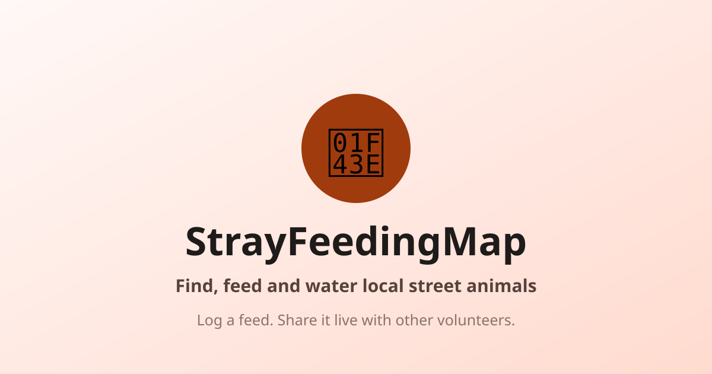

a little note from the person behind the map
A live map of stray animals, daily feedings, and water bowls near you. Made by one feeder, for all of us. No account needed to look.

When street animals depend on whoever happens to walk by, one missed day really matters. I watched feeders move away, bowls sit empty for days, and regulars just vanish with nobody noticing.
So I started writing it down. Who ate, who looked thin, which bowl was dry. Then I thought, what if we all wrote it down in the same place?
That is all this is. A shared notebook for the neighborhood.
This is free, and I want to keep it that way. But the map tiles, the hosting, the photos, that all comes out of my pocket right now. If this helped you or an animal you love, throwing a few bucks in the bowl helps more than you know.
P.S. If something on the map looks wrong, or you just want to say hi: lirzqad@gmail.com. I read everything myself, usually late at night.